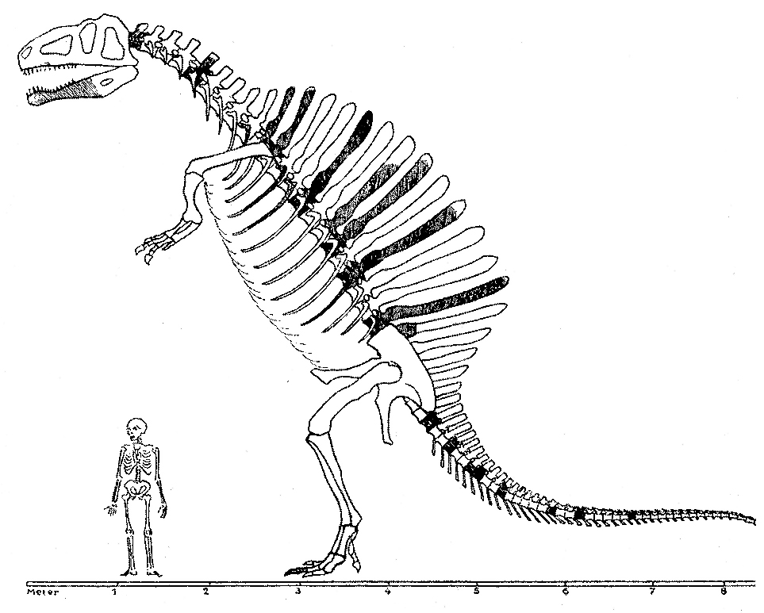
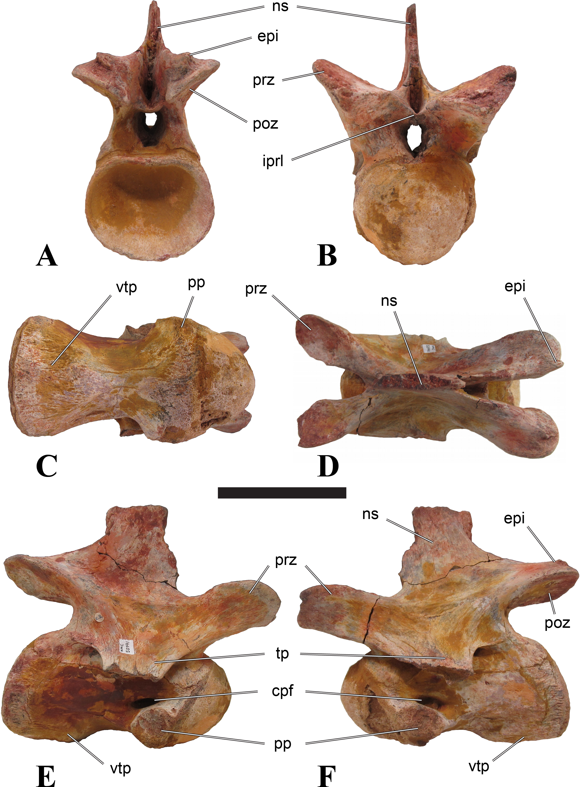
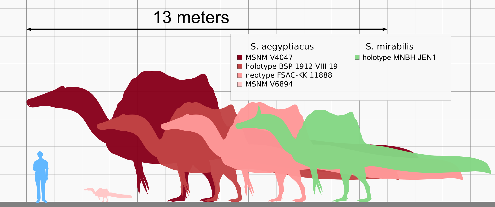
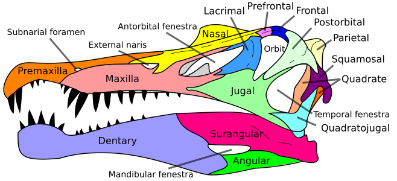
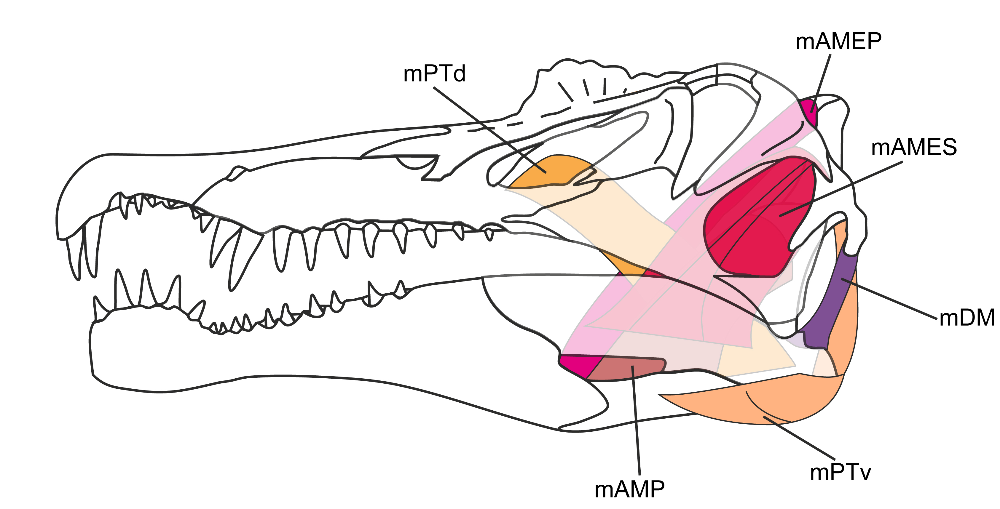
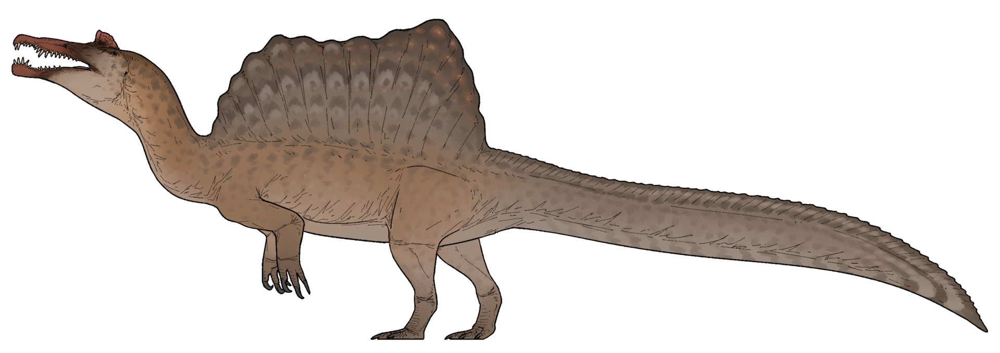

El género se conoció por primera vez a partir de restos egipcios descubiertos en 1912 y descritos por el paleontólogo alemán Ernst Stromer en 1915. Los restos originales fueron destruidos en la Segunda Guerra Mundial , pero salió a la luz material adicional a principios del siglo XXI. No está claro si una o dos especies están representadas en los fósiles reportados en la literatura científica. La especie tipo , S. aegyptiacus, se conoce principalmente de la Formación Bahariya en Egipto y los lechos de Kem Kem en Marruecos. La otra especie, S. mirabilis, se conoce de la Formación Farak en Níger. Se ha recuperado otra especie potencial, S. maroccanus, de los yacimientos de Kem Kem, es probable que esta especie dudosa sea un sinónimo más moderno de S. aegyptiacus. Otros posibles sinónimos más modernos incluyen Sigilmassasaurus de los yacimientos de Kem Kem y Oxalaia de la Formación Alcântara en Brasil, aunque otros investigadores proponen que ambos géneros son taxones distintos.
Descubrimiento y denominación
Hallazgos iniciales

El primer descubrimiento de Spinosaurus pudo haber ocurrido en octubre de 1898, cuando el geólogo francés Fernand Foureau desenterró dos dientes inusuales en sedimentos del Cenomaniense de la escarpa de Djoua, en lo que hoy es el sur de Argelia, entonces Argelia francesa. Foureau encontró los especímenes durante la Expedición Foureau-Lamy de 1898-1900, que viajó a través del Sáhara desde Argelia hasta el lago Chad. En 1905, el geólogo francés Émile Haug describió los fósiles desenterrados durante la expedición, incluyendo los dos dientes que asignó al pez Saurocephalus. Sin embargo, en 1915, el paleontólogo alemán y descriptor de Spinosaurus, Ernst Stromer, reasignó los dientes a Spinosaurus. Estudios posteriores han coincidido con esta evaluación, sin embargo, los dientes se han perdido desde entonces.
Los primeros restos de Spinosaurus que se pueden identificar con certeza fueron descubiertos en el otoño de 1912 por el paleontólogo austrohúngaro Richard Markgraf, un coleccionista de fósiles financiado por Stromer y la Academia Bávara de Ciencias, en depósitos de la Formación Baharija en el oasis de Bahariya, en el oeste de Egipto. Los sedimentos de la Formación Baharija pertenecen al Cenomaniense del Cretácico Superior, una de las muchas formaciones cretácicas del norte de África. En 1915, Stromer describió estos restos como pertenecientes a un nuevo género y especie de dinosaurio, Spinosaurus aegyptiacus. El nombre genérico Spinosaurus proviene del latín spina, que significa "espina", y del griego sauros, que significa "lagarto", y por lo tanto "lagarto espinoso". El nombre específico aegyptiacus deriva de Egipto, donde se desenterraron los fósiles. El espécimen tipo de Spinosaurus aegyptiacus (BSP 1912 VIII 19) consta de elementos de la mandíbula (mandíbula inferior), un fragmento de maxilar (mandíbula superior), vértebras cervicales (cuello), caudales (cola) y dorsales (espalda), incluyendo gran parte de las espinas neurales, costillas, dientes y algunas gastralias (costillas del vientre).
En abril de 1914, otra expedición al oasis de Bahariya, dirigida por Markgraf, desenterró un esqueleto incompleto (BSP 1922 X45) de un espinosáurido. Este esqueleto estaba mal conservado y, como resultado del desembalaje ilegal y el embalaje insuficiente por parte de anglo-egipcios durante la Primera Guerra Mundial, sufrió graves daños. Tras muchas deliberaciones debido a la guerra y las tensas relaciones anglo-alemanas, el esqueleto llegó a Alemania en 1922, donde fue descrito por Stromer en 1934. Stromer asignó el esqueleto a Spinosaurus, pero lo consideró lo suficientemente diferente de S. aegyptiacus como para pertenecer a su propia especie de Spinosaurus, "Spinosaurus B".

En 1936, Stromer trabajó con el Dr. Erhardt (se desconoce su nombre de pila) para crear una reconstrucción esquelética de Spinosaurus basada en fósiles del holotipo, "Spinosaurus B", y taxones relacionados. Aunque Stromer dudaba de la falta de restos conocidos, él y Erhardt produjeron una restauración que completó los elementos faltantes del esqueleto de Spinosaurus con los terópodos tiranosáuridos Tyrannosaurus y Gorgosaurus. Desafortunadamente, durante la noche del 24 al 25 de abril de 1944, el edificio del Paläontologisches Museum München (Colección Estatal Bávara de Paleontología) de la Academia Bávara de Ciencias sufrió graves daños durante el bombardeo británico de Múnich. Debido a las tensiones personales y políticas entre Stromer y el curador del museo, un ferviente nazi, los fósiles de Spinosaurus que allí se conservaban no fueron reubicados y posteriormente destruidos como consecuencia del bombardeo. Los hallazgos de Stromer, incluido Spinosaurus, recibieron poca atención académica o pública. En 1995, el hijo de Stromer donó los archivos de su padre a la Paläontologische Staatssammlung München, lo que dio lugar a un estudio en 2006 realizado por el investigador estadounidense Joshua Smith y sus colegas sobre las fotografías, dos de las cuales correspondían al holotipo de Spinosaurus. Basándose en estas fotografías de la mandíbula y del espécimen completo montado, Smith concluyó que los dibujos originales de Stromer de 1915 eran ligeramente inexactos. No se describiría más material de espinosáuridos procedente de África hasta la segunda mitad del siglo XX, y Spinosaurus siguió siendo un terópodo enigmático y misterioso.
Hallazgos adicionales
A partir de la década de 1980, se empezó a describir material de Spinosaurus procedente de yacimientos en Argelia, Marruecos y Túnez, aunque estos fósiles a menudo estaban aislados y fragmentarios. En 1986, un artículo atribuyó varios dientes encontrados en depósitos del Cretácico en Túnez a Spinosaurus, siendo la primera evidencia de la existencia del taxón en el país. En 1989, el paleontólogo francés Eric Buffetaut asignó dos fragmentos de mandíbula y un diente que habían sido desenterrados en un depósito de las capas de Kem Kem en Taouz, Marruecos, a Spinosaurus sp., ampliando la distribución conocida del género a Marruecos. En la década de 1990, se describió una gran cantidad de restos de espinosáuridos de América del Sur, Asia, África y Europa, fortaleciendo la comprensión de Spinosaurus y Spinosauridae. Sin embargo, gran parte de la anatomía de Spinosaurus seguía siendo oscura y muchos estudios propusieron que los fósiles previamente asignados al género o Sigilmassasaurus eran en realidad de ornitisquios iguanodóntidos , megaraptoranos , carcharodontosáuridos, u otras formas de terópodos.
Se recuperaron fósiles adicionales de Spinosaurus de los estratos de Kem Kem en el oasis de Tafilalt , en Marruecos, cerca del sitio de la antigua ciudad de Sigilmassa . En 1996, el paleontólogo canadiense Dale Russell describió estos fósiles, que consisten en tres vértebras cervicales, dos fragmentos de mandíbula y la espina neural de una vértebra dorsal, como pertenecientes a una nueva especie de Spinosaurus , S. maroccanus . El nombre específico, maroccanus , deriva de royaume du Maroc (" Reino de Marruecos "), donde se desenterraron los fósiles. El sitio donde se encontraron los fósiles de S. maroccanus se encuentra en el sur del país y está compuesto de arenisca roja , conocida por varios nombres, incluidos Grès rouges infracénomaniens , Continental Red Beds y Lower Kem Kem Beds. De estos fósiles, una vértebra cervical (catalogada en el Museo Canadiense de la Naturaleza como NMC 50791) fue seleccionada como el holotipo de S. maroccanus .

S. maroccanus se diferenció de S. aegyptiacus en función de la longitud de sus vértebras cervicales. Específicamente, Russell afirmó que la relación entre la longitud del centro (cuerpo de la vértebra) y la altura de la faceta articular posterior era de 1,1 en S. aegyptiacus y de 1,5 en S. maroccanus . Autores posteriores se han dividido sobre este tema, y algunos autores señalan que la longitud de las vértebras puede variar de un individuo a otro, que el espécimen holotipo fue destruido y, por lo tanto, no se puede comparar directamente con el espécimen de S. maroccanus , y que se desconoce qué vértebras cervicales representan los especímenes de S. maroccanus . Por lo tanto, aunque algunos han mantenido la especie como válida sin mucho comentario, la mayoría de los investigadores consideran a S. maroccanus como un nomen dubium (nombre dudoso), un sinónimo menor de S. aegyptiacus, o un sinónimo menor de Sigilmassasaurus brevicollis . Algunos estudios se han referido al holotipo y otros especímenes referidos de S. maroccanus (NMC 50791 y MNHN SAM 124–128) como S. cf. aegyptiacus . Los especímenes previamente atribuidos como paratipos de S. maroccanus (NMC 41768 y NMC 50790) fueron reidentificados como especímenes de espinosáuridos que actualmente no son identificables a nivel genérico.
En 1996, un estudio del paleontólogo estadounidense Paul Sereno y sus colegas asignó vértebras cervicales referidas a "Spinosaurus B" y al espinosáurido Sigilmassasaurus (un posible sinónimo de Spinosaurus) al carcharodontosáurido Carcharodontosaurus. Esto se basó en la creencia errónea de que una vértebra cervical (SGM Din-3) encontrada cerca de un cráneo de Carcharodontosaurus (SGM Din-1) pertenecía al mismo individuo. Sereno y sus colegas también razonaron que se necesitarían vértebras cervicales robustas como las de Sigilmassasaurus para sostener los cráneos de los carcharodontosáuridos, sin embargo, análisis posteriores han demostrado que "Spinosaurus B" y Sigilmassasaurus no son sinónimos ni contienen fósiles de Carcharodontosaurus. Algunos estudios han continuado refiriéndose a "Spinosaurus B" como Sigilmassasaurus, aunque esto todavía se debate. En 2003, Oliver Rauhut sugirió que el espécimen holotipo (portador de nombre) de Spinosaurus de Stromer era una quimera, compuesta de vértebras y espinas neurales de un carcharodontosáurido similar a Acrocanthosaurus y una mandíbula de Baryonyx o Suchomimus, un análisis que fue rechazado en al menos un artículo posterior.
Neotipo

En 2008, un coleccionista de fósiles marroquí afincado en Erfoud presentó algunos fósiles fragmentarios de dinosaurios al paleontólogo italiano Nizar Ibrahim , quien sospechó que podrían pertenecer a Spinosaurus . Al año siguiente, el Museo di Storia Naturale di Milano (MSNM) adquirió otros fósiles, que constituían un esqueleto parcial, de un comerciante de fósiles italiano que los había comprado al mismo que le mostró los restos a Ibrahim el año anterior. Posteriormente, Ibrahim visitó el MSNM y los paleontólogos italianos Cristiano Dal Sasso y Simone Maganuco le presentaron el material . Ibrahim reconoció que los fósiles del MSNM y los que había visto en 2008 provenían de una matriz de arenisca similar y que las espinas neurales de los fósiles del MSNM eran similares a las representadas por Stromer en 1915, lo que le llevó a pensar que podrían pertenecer al mismo individuo y ser Spinosaurus .
Posteriormente, se inició una colaboración internacional entre Ibrahim y otros paleontólogos para estudiar los huesos y visitar el yacimiento original, y los fósiles del MSNM se enviaron a la Universidad de Chicago para su estudio. En 2013, Ibrahim, el paleontólogo marroquí Samir Zouhri y el paleontólogo británico David Martill viajaron a Casablanca en busca del comerciante de fósiles original, a quien lograron localizar. Posteriormente, el comerciante los llevó de regreso al yacimiento donde se habían encontrado los fósiles. A lo largo de varios años, se desenterró un esqueleto de un individuo subadulto que consistía en fragmentos de cráneo, algunas vértebras cervicales, dorsales y caudales, espinas neurales, un sacro completo , gran parte de las extremidades posteriores , varias falanges de los pies y varias costillas dorsales. Este esqueleto procede de una localidad de la Formación Douria de los estratos de Kem Kem en Zrigat , Marruecos, datada en la etapa Cenomaniense del período Cretácico medio. Fue depositado en el Museo de Casablanca con el número de espécimen FSAC-KK-11888.

En 2014, Ibrahim y sus colegas asignaron los fósiles a S. aegyptiacus , lo propusieron como neotipo (holotipo de reemplazo) y afirmaron que todo el material de espinosáuridos del Cenomaniense del Norte de África pertenece a S. aegyptiacus . La descripción de estos restos generó intriga, sorpresa y controversia, ya que los autores afirmaron que Spinosaurus era un espinosáurido posiblemente cuadrúpedo , semiacuático y de extremidades cortas. Las proporciones corporales del espécimen han sido objeto de debate, ya que las extremidades posteriores son desproporcionadamente más cortas que en reconstrucciones anteriores. Sin embargo, varios paleontólogos han demostrado que el espécimen no es una quimera, sino un espécimen de Spinosaurus que sugiere que el animal tenía extremidades posteriores mucho más pequeñas de lo que se pensaba.
En 2015, el paleontólogo británico Serjoscha Evers y sus colegas rechazaron la propuesta de neotipo para FSAC-KK-11888 debido a la falta de información sobre su asociación o localidad, la separación geográfica entre las localidades del holotipo y FSAC-KK-11888, y las diferencias anatómicas entre FSAC-KK-11888 y el holotipo. Evers y sus colegas defienden la validez tanto de S. maroccanus como de S. aegyptiacus , afirmando que FSAC-KK-11888 probablemente pertenece al primero. Además, afirman que la separación geográfica de FSAC-KK-11888 y el holotipo, así como la descripción detallada del holotipo por Stromer, son evidencia de que FSAC-KK-11888 no cumple con los requisitos del ICZN (Código Internacional de Nomenclatura Zoológica) para un neotipo y que la creación de un neotipo es innecesaria para S. aegyptiacus . Además, algunos paleontólogos han sugerido que las proporciones de las vértebras dorsales en comparación con las patas de FSAC-KK-11888, cuando se comparan con las proporciones de "Spinosaurus B", ilustran que o bien el primero es un compuesto (un espécimen compuesto de múltiples individuos de la misma especie)/ quimera (un espécimen compuesto de material de dos o más especies) entre un individuo conocido por las vértebras dorsales y un individuo conocido por el material de las extremidades, la pelvis y la cola , o bien que FSAC-KK-11888 no es de Spinosaurus .
Entre 2015 y 2019, varias expediciones adicionales al yacimiento desenterraron fósiles adicionales de FSAC-KK-11888, incluyendo numerosas vértebras caudales, que componen aproximadamente el 80% de la cola con una longitud conservada de 4 m (13 pies) , elementos del pie y las extremidades posteriores, fragmentos de cráneo y más. Alrededor del 90% de este nuevo material se encontró a finales de 2018, mientras que algunos fragmentos, incluyendo material craneal, se encontraron entre los restos de expediciones anteriores. En 2020, Ibrahim y sus colegas describieron la cola de FSAC-KK-11888, la cual, según afirmaron, se asemeja mucho a las vértebras caudales del holotipo y del "Spinosaurus B". El material encontrado en estas expediciones coincide perfectamente con elementos de FSAC-KK-11888, lo que demuestra que pertenecen a un solo individuo. La longitud corporal del neotipo propuesto, excluyendo la porción de la cola, desde la punta anterior del cráneo hasta la región posterior de la cintura pélvica, se estima en hasta 5,88 m (19,3 pies) y la longitud total de la cola se estima en hasta 5,3 m (17 pies) .
Descripción
Tamaño

Desde su descubrimiento, el Spinosaurus ha sido un candidato al dinosaurio terópodo más grande. Tanto Friedrich von Huene en 1926 como Donald F. Glut en 1982 lo incluyeron entre los terópodos más masivos en sus estudios, con 15 m (49 pies) de longitud y más de 6 t (6,6 toneladas cortas) de peso. En 1988, Gregory S. Paul también lo incluyó como el terópodo más largo con 15 m (49 pies) , pero dio una estimación de masa menor de 4 t (4,4 toneladas cortas) .

En 2005, Dal Sasso y colegas asumieron que Spinosaurus y el relacionado Suchomimus tenían las mismas proporciones corporales en relación con la longitud de sus cráneos, y estimaron que Spinosaurus medía de 16 a 18 m (52 a 59 pies) de largo y pesaba de 7 a 9 t (7,7 a 9,9 toneladas cortas) . En su artículo de 2007, utilizando escalamiento para extrapolar el tamaño corporal de los terópodos basándose en la longitud del cráneo, François Therrien y Donald Henderson desafiaron las estimaciones previas del tamaño de Spinosaurus . Basándose en longitudes de cráneo estimadas de 1,5 a 1,75 m (4 pies 11 pulgadas a 5 pies 9 pulgadas) , estimaron una longitud corporal de 12,6 a 14,3 m (41 a 47 pies) y una masa corporal de 12 a 20,9 t (13,2 a 23,0 toneladas cortas) ; también sugirieron que, contrariamente a Dal Sasso et al. (2005), su escala basada en un Suchomimus de 11 m (36 pies) de largo produciría una masa corporal estimada de 11,7 a 16,7 t (12,9 a 18,4 toneladas cortas) . Las estimaciones más bajas para Spinosaurus implicarían que el animal era más corto y ligero que Carcharodontosaurus y Giganotosaurus . En 2020, Nicolás Campione y David Evans sugirieron tener cuidado con el enfoque que utiliza la longitud del cráneo para la extrapolación, concretamente la de Spinosaurus , ya que la región preorbital de algunos dinosaurios crece alométricamente (desproporcionadamente con el tamaño corporal) y las propiedades craneales probablemente estaban bajo diferentes presiones de selección no relacionadas con el tamaño corporal.
En 2014, Ibrahim y sus colegas sugirieron que un Spinosaurus aegyptiacus adulto podría alcanzar más de 15 m (49 pies) de longitud. Sin embargo, en 2022, Paul Sereno y sus colegas sugirieron que Spinosaurus aegyptiacus alcanzó una longitud corporal máxima de 14 m (46 pies) y una masa corporal máxima de 7,4 t (8,2 toneladas cortas) mediante la construcción de un modelo esquelético 3D basado en TC "con la columna axial en posición neutra". Argumentaron que la reconstrucción gráfica 2D de la hipótesis acuática de Ibrahim y sus colegas en 2020 sobreestimó la longitud de la columna presacra en un 10%, la profundidad de la caja torácica en un 25% y la longitud de la extremidad anterior en un 30% sobre las dimensiones basadas en fósiles escaneados por TC; Estas sobreestimaciones proporcionales desplazan el centro de masa hacia adelante cuando se traducen a un modelo de carne, por lo que la estimación de Ibrahim y sus colegas no puede considerarse una estimación fiable del tamaño corporal.
Cráneo


Su cráneo tenía un hocico estrecho lleno de dientes cónicos rectos que carecían de serraciones. Había seis o siete dientes a cada lado de la parte frontal de la mandíbula superior, en los premaxilares, y otros doce en ambos maxilares detrás de ellos. El segundo y tercer diente de cada lado eran notablemente más grandes que el resto de los dientes en el premaxilar, creando un espacio entre ellos y los dientes grandes en la parte frontal del maxilar; los dientes grandes en la mandíbula inferior daban a este espacio. La punta del hocico que sostenía esos pocos dientes frontales grandes estaba expandida, y había una pequeña cresta presente delante de los ojos. Usando las dimensiones de tres especímenes conocidos como MSNM V4047, UCPC-2 y BSP 1912 VIII 19, y asumiendo que la región postorbital de MSNM V4047 tenía una forma similar a la región postorbital de Irritator , Dal Sasso et al. (2005) estimaron que el cráneo de un Spinosaurus adulto era de 1,75 metros (5,7 pies) de largo, pero Hendrickx et al. (2016) sugirieron que una longitud de 1,6 metros (5,2 pies) es más probable. La longitud estimada del cráneo del neotipo subadulto es de hasta 1,12 metros (3,7 pies) . Un estudio de 2026 analizó material craneal de dos espinosáuridos, incluidos dos especímenes referidos a la controvertida especie S. maroccanus , sus hallazgos se interpretaron como indicativos de un sistema neurovascular sensible y altamente desarrollado y una alta tasa de reemplazo dental en los espinosáuridos desde una edad temprana.
Esqueleto postcraneal

Como espinosáurido, el Spinosaurus habría tenido un cuello largo y musculoso, curvado en forma de sigmoide o S. Sus hombros eran prominentes y las extremidades anteriores grandes y robustas, con tres dedos con garras en cada mano. El dedo índice (o "pulgar") habría sido el más grande. El Spinosaurus tenía falanges largas (huesos de los dedos) y garras solo ligeramente recurvadas , lo que sugiere que sus manos eran más largas en comparación con las de otros espinosáuridos.

Las espinas neurales muy altas que crecían en las vértebras posteriores del Spinosaurus formaban la base de lo que generalmente se denomina la " vela " del animal. La longitud de las espinas neurales alcanzaba más de 10 veces el diámetro de los centros (cuerpos vertebrales) de los que se extendían. Las espinas neurales eran ligeramente más largas de adelante hacia atrás en la base que en la parte superior, y eran diferentes de las varillas delgadas que se observan en los pelicosaurios con aletas dorsales como Edaphosaurus , Ianthasaurus y Dimetrodon , contrastando también con las espinas más gruesas del iguanodóntido Ouranosaurus .
Las velas de Spinosaurus eran inusuales, aunque otros dinosaurios, como Ouranosaurus , que vivió unos millones de años antes en la misma región que Spinosaurus , y el saurópodo sudamericano del Cretácico Inferior Amargasaurus , podrían haber desarrollado adaptaciones estructurales similares en sus vértebras. La vela podría ser un análogo de la vela del sinápsido del Pérmico Dimetrodon , que vivió antes incluso de la aparición de los dinosaurios, producto de la evolución convergente
La estructura también pudo haber sido más parecida a una joroba que a una vela, como señaló Stromer en 1915 ("uno podría pensar más bien en la existencia de una gran joroba de grasa [ alemán : Fettbuckel ], a la que las [espinas neurales] daban soporte interno") y por Jack Bowman Bailey en 1997. En apoyo de su hipótesis de "espalda de búfalo", Bailey argumentó que en Spinosaurus , Ouranosaurus y otros dinosaurios con largas espinas neurales, las espinas eran relativamente más cortas y gruesas que las espinas de los pelicosaurios (que se sabe que tienen velas); en cambio, las espinas neurales de los dinosaurios eran similares a las espinas neurales de mamíferos jorobados extintos como Megacerops y Bison latifrons . En 2014, Ibrahim y sus colegas postularon que las espinas estaban cubiertas firmemente por piel, similar a un camaleón crestado , dada su compacidad, bordes afilados y probable flujo sanguíneo deficiente .